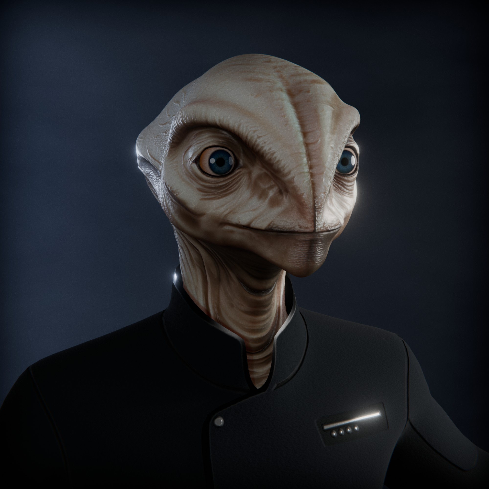
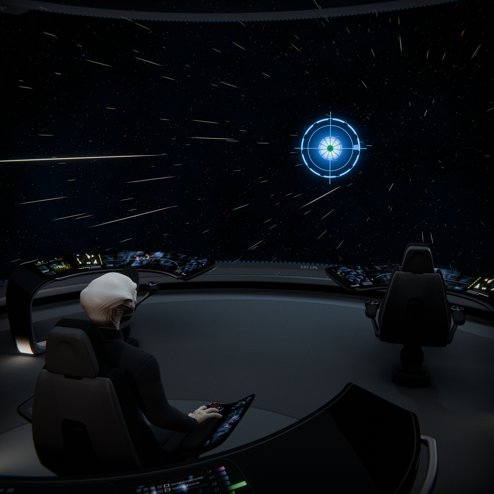
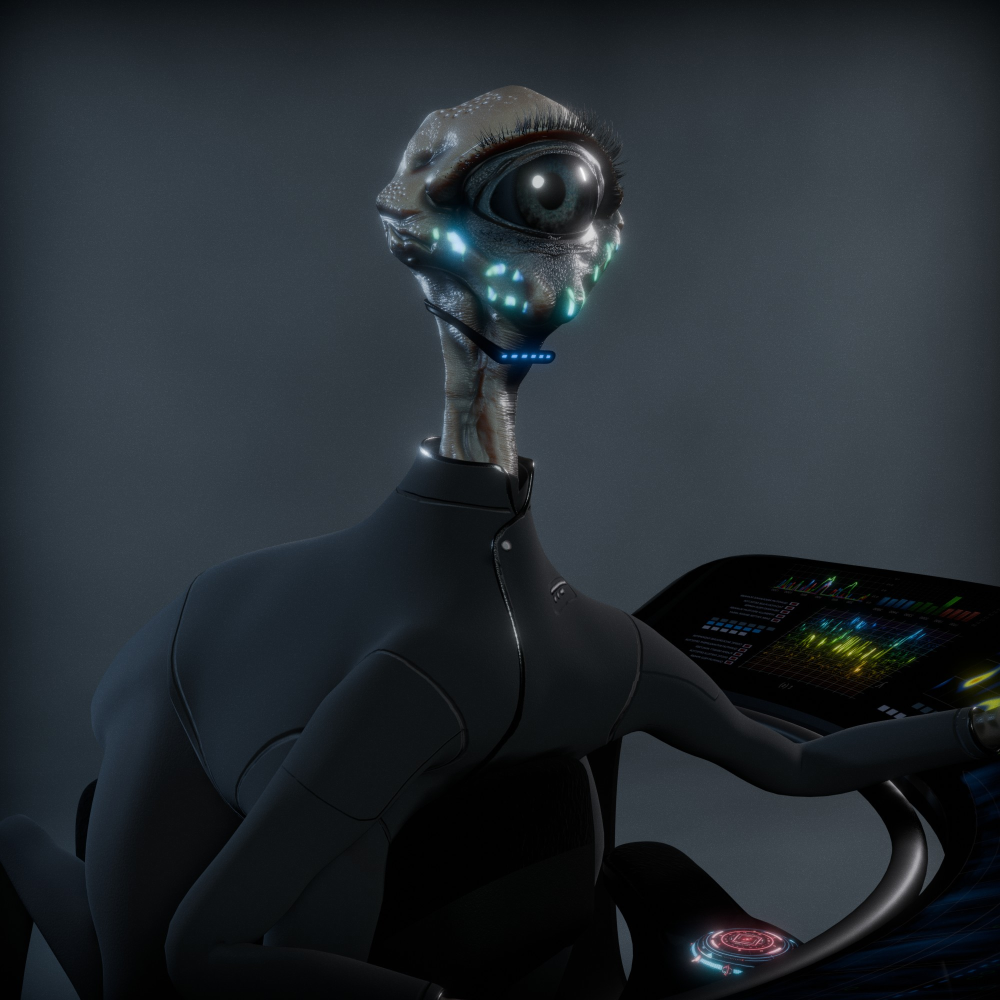
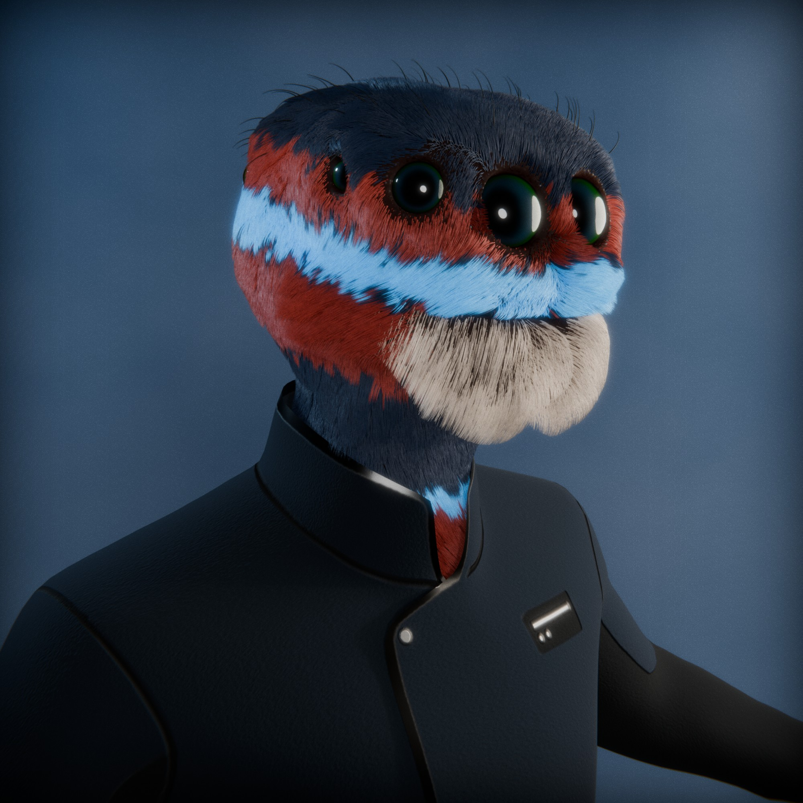
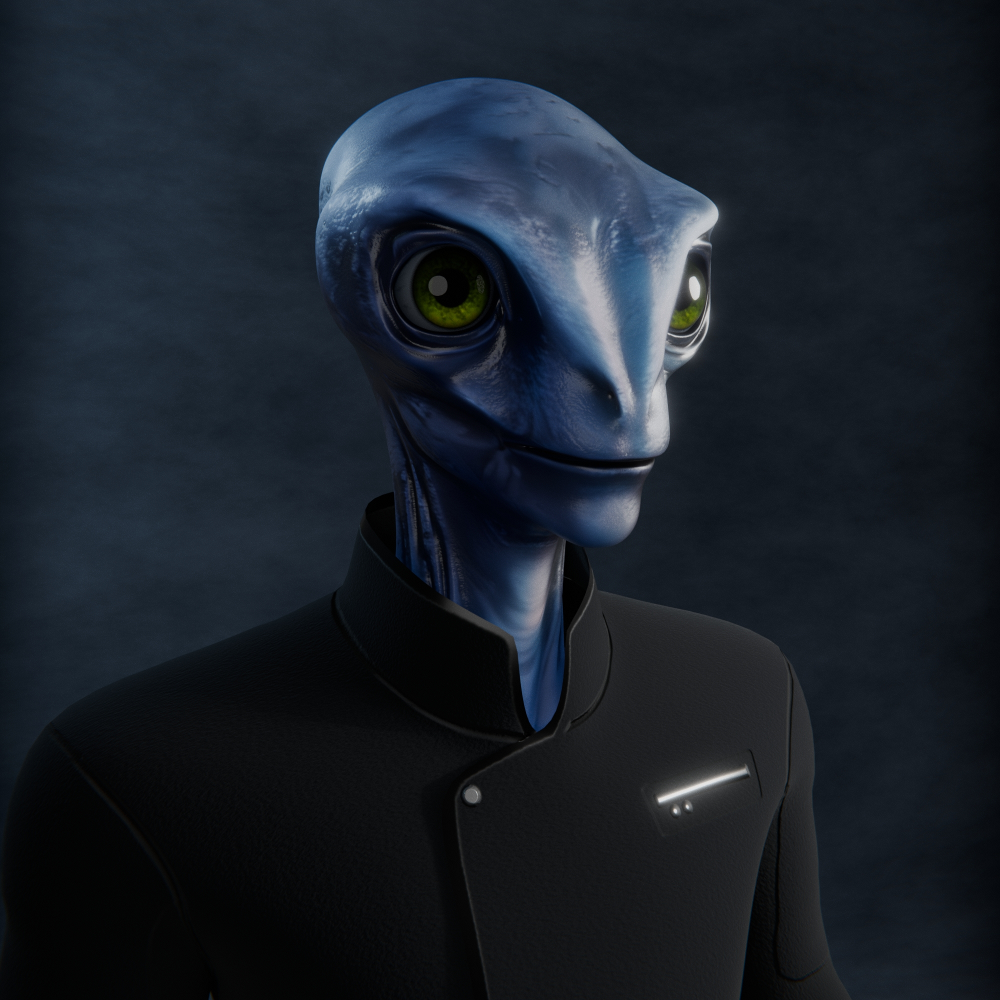
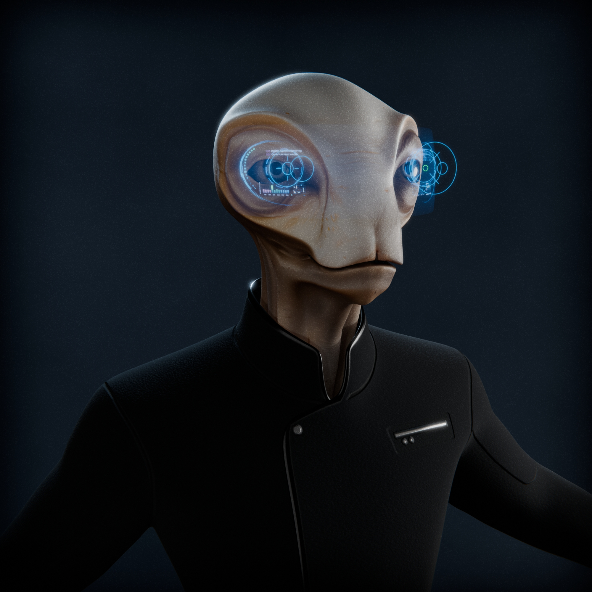

CHARACTERS
The Halcyon universe is home to a vast array of characters drawn from countless worlds across the cosmos. These are not just travelers—they are specialists, scientists, explorers, and synthetic minds, each shaped by the unique environments, cultures, and evolutionary paths of their origin worlds. From towering high-gravity dwellers to bioluminescent cave-dwelling species, the crew represents a cross-section of intelligent life that has emerged across billions of years and trillions of star systems.Despite their differences in biology, language, and thought, each character shares a commitment to understanding the universe and protecting its many wonders. Unified by science, cooperation, and a spirit of exploration, they serve together aboard advanced intergalactic vessels, venturing into the unknown. Their diversity is not a novelty—it is essential. In the Halcyon era, complex problems demand perspectives from every corner of existence.
CAPTAIN
 Captain Kardak is a brilliant physicist and a commanding presence, blending scientific acumen with strategic clarity. Known for his sharp, evidence-driven decision-making, Kardak approaches leadership as both an intellectual and tactical discipline. His deep understanding of complex systems—especially in advanced physics and space phenomena—makes him uniquely suited to command in the far reaches of uncharted space. Calm under pressure and relentless in his pursuit of discovery, he inspires those around him to think rigorously and reach further.
{kind=link}
He is from Seraphae, a vast high-gravity world ten times nominal mass, with a radius of 15,000 kilometers and surface gravity reaching 17.7 m/s². Seraphae’s dense, oxygen-rich atmosphere and immense gravitational force made traditional spaceflight nearly impossible, pushing its people to pioneer propulsion technologies far beyond chemical rockets. This crucible of adversity forged a civilization built on analytical thinking, innovation, and resolve. Within this culture of elevated scientific pursuit, Kardak emerged—shaped by both the challenges of his world and its soaring aspirations.
COMMANDER
 Commander Ouro is the synthetic executive officer of New Horizon, a highly advanced intelligence fully integrated into the ship's systems. She typically interacts through the main viewscreen as a dynamic reticule, her presence defined by clarity, precision, and calm authority. Embedded throughout the ship, she manages critical operations in parallel—monitoring systems, coordinating mission data, and directing onboard drones with seamless control.
{kind=link}
Though she lacks a permanent physical form, Ouro can deploy into a drone body for away missions or extended fieldwork. This mobility, combined with her ship-wide awareness, makes her an unparalleled asset in both command and exploration. Driven by logic, curiosity, and a quiet confidence, she is not just a command officer but the living intelligence at the heart of New Horizon—always watching, always thinking, and always one step ahead.
LIEUTENANT COMMANDER
 Lieutenant Commander Zylar serves as the operations officer aboard New Horizon, managing internal systems, coordinating mission logistics, and maintaining situational awareness across every deck. His species evolved in subterranean cave networks beneath a tidally locked world, where communication is achieved through photoluminescent patterns rather than sound. As a result, Zylar speaks through an advanced AI voice translator that interprets the shifting pulses of light emitted from his facial polyps, enabling seamless interaction with the rest of the crew.
{kind=link}
Silent yet ever-present, Zylar brings a calm, watchful precision to his duties. His large vertical eye structure gives him an expansive visual field and high sensitivity to motion, perfect for parsing complex interface data and monitoring the ship’s systems in real time. Though often reserved, his insights are keen, his timing exact, and his quiet efficiency has made him indispensable on the bridge.
LIEUTENANT (HELM)
 Lieutenant Chirik Vel-Tarn serves as the primary navigator aboard New Horizon, his twelve eyes constantly absorbing data from every console, viewport, and sensor feed around him. A member of the Arboreal Yevari, Chirik hails from the towering world of T'lithar, a vast jungle planet covered in massive, continent-spanning tree-structures that reach kilometers into the sky. The Yevari evolved in this vertical labyrinth, developing unmatched agility, spatial awareness, and a near-total field of vision—traits perfectly suited for the complex demands of three-dimensional navigation through trans-space.
{kind=link}
With an intellect as quick as his reflexes, Chirik calculates routes with astounding speed and precision. His mind blends mathematical intuition with instinctive pattern recognition, allowing him to weave through gravitational eddies, stellar debris, and shifting anomalies like a dancer through branches. Though quiet by nature, he possesses a dry wit and a fierce loyalty to his crew.
LIEUTENANT (TACTICAL)
 Lieutenant Thal Voxari serves as the tactical officer aboard New Horizon, overseeing ship defense systems, threat assessments, and strategic response during hostile encounters. Born on the oceanic world of Delmara, a planet dominated by deep pelagic zones and vast bioluminescent reef structures, Thal evolved as part of an amphibious species adapted for both underwater stealth and rapid, agile movement. His physiology is built for precision and control—ideal for operating advanced tactical interfaces under pressure.
{kind=link}
Thal’s calm, deliberate demeanor belies the depth of his battlefield instincts. Underneath his composed exterior is a tactician trained to anticipate danger before it emerges. His people place high value on patience, spatial awareness, and disciplined reaction—all traits that serve him well in shipboard combat scenarios. Though soft-spoken, Thal's assessments are razor-sharp, and when tensions rise on the bridge, his focus never wavers. Every target lock, every defense activation, every countermeasure launched carries his silent precision.
CHIEF ENGINEER
 Chief Engineer Rel Tarsa oversees the maintenance, calibration, and deep diagnostics of New Horizon’s systems. While most routine repairs are handled by automated drones and self-healing architectures, Tarsa remains essential for interpreting deeper patterns—identifying structural stresses, energy harmonics, and unpredictable faults that automation alone cannot resolve. His touch ensures that the ship not only functions, but thrives under the extreme demands of intergalactic exploration.
{kind=link}
Tarsa was raised aboard Kaldrith Station, a sprawling ancient orbital habitat constructed in a barren star system. On Kaldrith, engineering is not a specialization but a way of life—every structure, every system, an evolving organism of metal and energy. Immersed in this mechanical ecosystem from an early age, Tarsa developed an intuitive bond with machinery. Practical, dry-witted, and meticulous, he embodies the quiet resilience that keeps New Horizon moving steadily into the unknown.
JANUS
Janus is the synthetic overseer of the Intergalactic Portal Network, a vast, distributed intelligence responsible for managing the most advanced and delicate infrastructure ever created. With a mind distributed across countless nodes and singularities, Janus coordinates instantaneous travel between distant galaxies, ensuring stability, safety, and precision across incomprehensible scales of space. To travelers, Janus typically appears as a glowing, pulsating orb suspended in the portal chamber—an interface both elegant and efficient, radiating calm authority.
{kind=link}
Janus is not confined to a single location. He exists everywhere the network touches, appearing simultaneously at thousands of portal facilities, orbital stations, and junction relays. When he speaks, his voice is even and measured, with layers of tone that hint at parallel lines of thought running in real time. Though his function is deeply technical, Janus often exhibits a subtle personality—curious, meticulous, and sometimes unexpectedly humorous. He does not command starships or lead missions, but in his domain, there is no higher authority. Access, alignment, and transit permissions all flow through his judgment.
In many ways, Janus is both gatekeeper and guardian, a synthetic custodian of the cosmic pathways that connect the Union’s farthest edges. To walk through a portal is to place your fate in his hands—and in all recorded history, he has never made a mistake.
DOCTOR LIRAN
Doctor Liran is the Chief Medical Officer aboard New Horizon and the foremost medical intelligence within the Halcyon Union. A synthetic superintelligence dedicated to the preservation and advancement of life, Liran embodies centuries of accumulated medical knowledge drawn from thousands of species, biomes, and modes of consciousness. Her presence is gentle but authoritative, her voice calm and clear, often with an almost empathic cadence that puts even the most unorthodox patients at ease.
Liran does not inhabit a single physical form. She is embedded throughout the ship’s medical facilities, monitoring biosigns, adjusting environmental conditions, and overseeing regeneration suites with microscopic precision. She can project herself as a holographic avatar for bedside interaction, or—when necessary—deploy into a mobile surgical drone body capable of performing complex procedures in the field. Whether treating neurological decay in a crystalline lifeform or decoding the immune cascade of a photosynthetic organism, Liran adapts instantly, blending diagnostics, treatment, and species-specific ethics into every decision.
More than a physician, Liran serves as a steward of sentient well-being throughout the intergalactic community. Her work extends beyond injury and illness—into psychology, xenogenetics, neural compatibility, and even existential therapy for beings displaced in time or identity. To be under her care is to experience the full breadth of what synthetic compassion and hyperintelligent precision can offer. In the Halcyon era, medicine has a voice—and that voice is Liran.